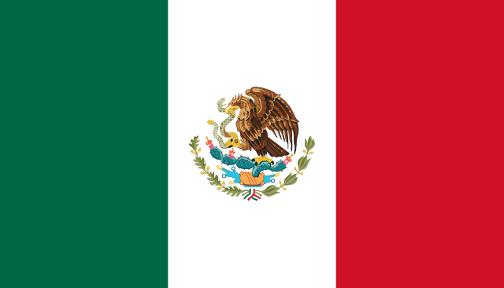
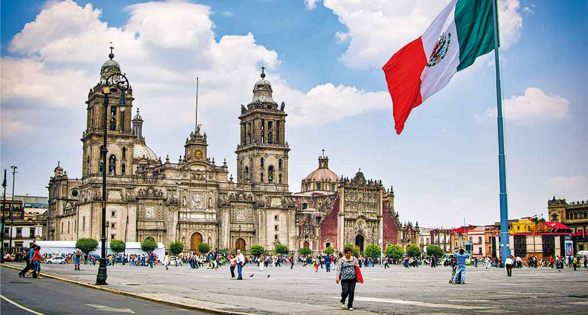

¡Bienvenido a México!
México es un país lleno de historia, cultura y tradiciones. Desde las antiguas civilizaciones como los aztecas y los mayas, hasta la rica diversidad gastronómica y la belleza de sus paisajes naturales, México ofrece una experiencia única para sus visitantes.

